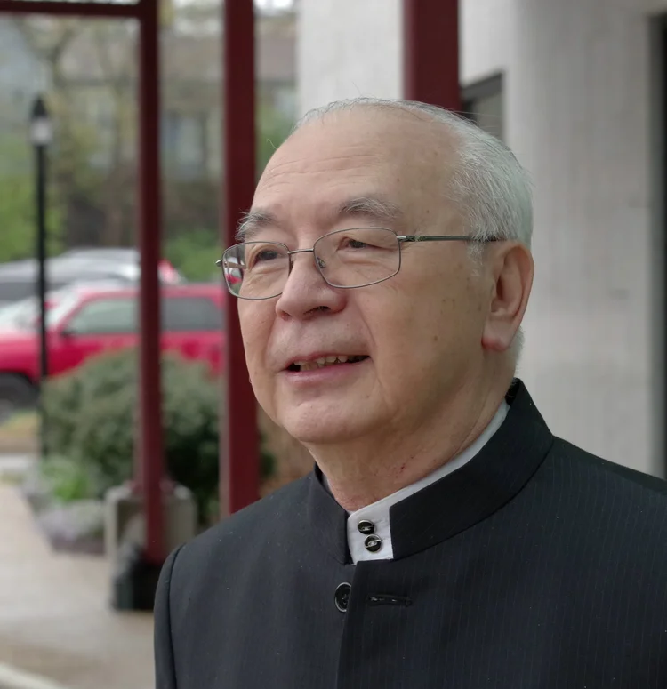
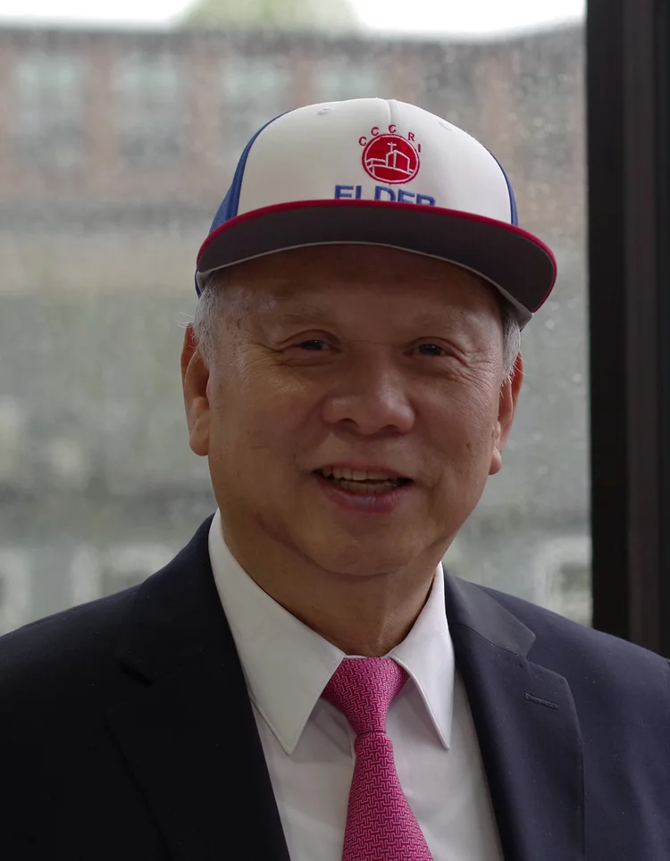
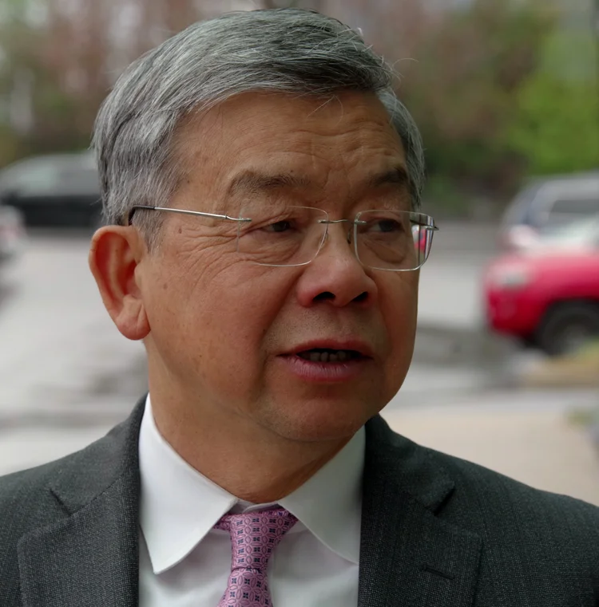
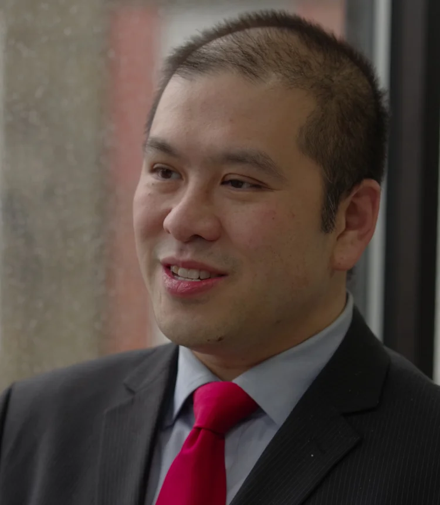
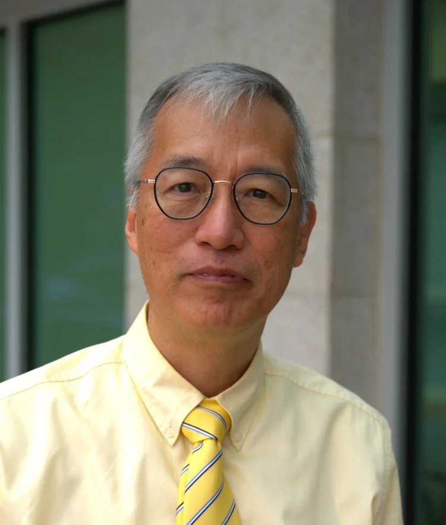

關於我們
About Us
建立信仰、社群與服事
Building Faith, Community, and Service
About CCCRI
無宗派的基督教會，以普通話、廣東話和英語服事羅德島和新英格蘭東南部地區的會眾。始於布朗大學一個由來自五湖四海的華人留學生和教師組成的團契。位於羅得島歷史悠久的波塔基市，交通便利，緊靠95號州際高速公路。
A non-denominational Christian church that serves its congregation in Rhode Island and southeastern New England in Mandarin, Cantonese, and English. It originated from a fellowship at Brown University comprised of Chinese international students and faculty from all over the world. Located in the historic city of Pawtucket, Rhode Island, it is easily accessible, being close to Interstate 95.
我們相信
We Believe
我們信仰的根基 The foundation of our faith
- 獨一真神——聖父、聖子、聖靈，三位一體。
- 祂創造了宇宙萬物，萬物依賴祂，並在祂的掌管之下。
- 耶穌基督，神的獨生子，由聖靈感孕，童貞女馬利亞所生。祂道成肉身，降世為人，擔當人類的罪，捨身流血，死在十字架上，被埋葬，第三天復活，四十天後升天，坐在神的右邊，為眾聖徒代求。祂將再來審判世界：信者承受永生，不信者被定罪。
- 聖靈，保惠師，能啟示、感動、安慰、引領人悔改認罪，賜予新生命，幫助信徒成聖，過得勝的生活；並賜下各種恩賜，建立教會。
- 新舊約聖經是神所默示的，是神的話語，是信仰和生活的最高準則。
- 人本是按神的形像所造，但因違背神而犯罪，成為神的仇敵；然而，藉著接受耶穌基督為救主，並靠著耶穌寶血，罪得赦免，與神和好。
- 教會是基督的身體，由信徒組成，以耶穌基督為元首。
- The one true God – the Father, the Son, and the Holy Spirit, are one.
- He created the universe and all things, they depend on Him, and they are under His control.
- Jesus Christ, the only begotten Son of God, was conceived by the Virgin Mary through the Holy Spirit. He became flesh, descended to earth to bear the sins of mankind, sacrificed his life and shed his blood, died on the cross, was buried, rose from the dead on the third day, ascended to heaven forty days later, and sits at the right hand of God to pray for all the saints. He will come again to judge the world: believers will inherit eternal life, and unbelievers will be condemned.
- The Holy Spirit, the Comforter, can reveal, move, comfort, and lead people to repentance, giving new life, helping believers to become sanctified and live a victorious life; and bestowing various gifts to build up the church.
- The Old and New Testaments are inspired by God, are the Word of God, and are the highest standard for faith and life.
- Humans were originally created in God's image, but they disobeyed God and sinned, becoming enemies of God; however, by accepting Jesus Christ as their Savior and through the precious blood of Jesus, their sins were forgiven and they were reconciled with God.
- The church is the body of Christ, composed of believers, with Jesus Christ as its head.
領導團隊
Our Leadership Team
忠心服事、引領會眾的同工 Dedicated servants guiding our congregation
長老
Elders
教會的屬靈領袖 · Spiritual leaders of our congregation

陳本生
Chen Bensheng
長老
Elder

葉超
Ye Chao
長老
Elder

吳子平
Wu Ziping
長老
Elder
牧師
Pastors
牧養我們的會眾 · Shepherding our congregation

姚學文
Yao Xuewen
牧師
Pastor
負責英文堂及青少年事工
Responsible for English ministry & youth ministry

甄德强
Zhen Deqiang
牧師
Pastor
負責中文堂/粵語事工
Responsible for Chinese/Cantonese ministry
曾世增
Zeng Shizeng
牧師
Pastor
負責中文堂/國語事工
Responsible for Chinese/Mandarin ministry
Pang Yiu
Pang Yiu
牧師
Pastor
負責兒童事工
Responsible for children's ministry
傳道與榮休
Preacher & Retired Reverend
忠心服事的同工 · Faithful servants in ministry
宋高靜芝
Song Gaojingzhi
義務傳道
Pro Bono Preacher
黄天祐
Huang Tianyou
榮休牧師
Retired Reverend
我們的宗旨
Our Mission
本教會以基督耶穌為首，聯合眾聖徒在主基督里互相建立，領人歸主，見證基督，傳揚福音，培育門徒，遵行主耶穌所托付之使命，以榮神益人。
Our church, with Jesus Christ as its head, unites all saints to build one another up in the Lord Jesus Christ, lead people to the Lord, witness to Christ, proclaim the gospel, nurture disciples, and carry out the mission entrusted to us by the Lord Jesus, so as to glorify God and benefit people.
Founded decades ago by Chinese immigrants, CCCRI has grown into a vibrant, multi-generational congregation with ministries for all ages, serving Rhode Island and southeastern New England.
核心價值
Our Core Values
以聖經和禱告為根基
Rooted in Scripture and prayer
跨越世代的聯結
Connecting across generations
本地與全球外展事工
Local and global outreach
門徒訓練與靈命塑造
Discipleship and spiritual formation
教會歷史
Church Chronology
我們走過的歲月 Milestones in our journey of faith
1977年3月6日 · March 6, 1977
罗德岛华人信徒正式建立教会，租用罗德岛普雷斯顿百老汇大道160号基督教青年会大楼。
Chinese believers in Rhode Island officially established a church, renting the YMCA building at 160 Broadway in Preston, Rhode Island.
1980年7月1日 · July 1, 1980
购置东普罗维登斯前基督教青年会旧址为新会址，8月1日正式启用。
The former YMCA site in East Providence was purchased as the new headquarters, officially opened on August 1.
1980年9月 · September 1980
中文学校成立。
A Chinese school was established.
1988年10月30日 · October 30, 1988
成人主日学及青年团契成立。
The adult Sunday school and youth fellowship were established.
1989年5月7日 · May 7, 1989
教会首个成人团契——以诺团契——正式成立。
The first adult fellowship in the church, the Enoch Fellowship, was established.
1990年1月25日 · January 25, 1990
青年团契成立，后于1992年1月改组为喜乐团契。
The Youth Fellowship was established, later reorganized into the Joyful Fellowship in January 1992.
1992年7月3日 · July 3, 1992
首届夏令营于埃克塞特卡诺尼克斯举行。
The first Summer Retreat was held in Canonicus, Exeter.
1994年5月28日 · May 28, 1994
教会首次户外旅行举行。
The first church field trip was held.
1994年9月9日 · September 9, 1994
罗德岛大学金斯顿圣经学习小组成立。
The URI Kingston Bible Study Group was established.
1996年4月14日 · April 14, 1996
首次英语礼拜于主堂举行。
The first English worship service was held in the main hall.
1997年1月4日 · January 4, 1997
长老迦勒团契成立。
The Elders' Caleb Fellowship was established.
1997年1月9日 · January 9, 1997
以诺团契分为7个小组：大卫、巴多罗买、挪亚、彼得、提摩太、路得及金斯顿。
The Enoch Fellowship was divided into 7 groups: David, Bartholomew, Noah, Peter, Timothy, Ruth, and Kingston.
1999年6月19日 · June 19, 1999
于新会址罗斯福大道333号举行感恩礼拜。
A thanksgiving service was held at the new church site at 333 Roosevelt Ave.
2000年4月 · April 2000
提摩太小组改组为佳美团契。
The Timothy Group was reorganized into the Jia Mei Fellowship.
2000年5月 · May 2000
首届妇女退休协会成立。
First Women's Retirement Association was formed.
2000年9月 · September 2000
英语大学职场团契成立，后于2015年改组为LIFE团契。
The English University Careers Fellowship was established, later reorganized into the LIFE Fellowship in 2015.
2002年11月9日 · November 9, 2002
教会首届年度宣教大会（为期两天）举行。主题：宣教、感召与行动。
The church's first annual mission conference (a two-day meeting) was held. Theme: Mission, Inspiration, and Action.
2006年4月13日 · April 13, 2006
「粤福」定期聚会开始。
Regular "Canfu" gatherings began.
2009年9月8日 · September 8, 2009
周二晚间圣餐敬拜首次举行。
Inaugural service for Tuesday evening communion worship.
2012年2月19日 · February 19, 2012
教会第十个团契——迦南团契——正式成立。
The church's 10th fellowship – Canaan Fellowship – was established.
2014年9月12日 · September 12, 2014
强生威尔斯大学华人基督徒团契（CCJF）正式成立。
The Chinese Christian Fellowship (CCJF) of Johnson & Wales University (JWU) was established.
2017年3月10日 · March 10, 2017
教会以奋兴会、嘉年华、感恩礼拜及姚牧师的按立典礼庆祝建堂40周年。
The church celebrated its 40th anniversary with a revival meeting, a carnival, a thanksgiving service, and the ordination of Pastor Yao.
Join Us Online
無法親自出席？線上觀看直播或隨時收看錄影。
Can't make it in person? Watch our services live or access recordings anytime.